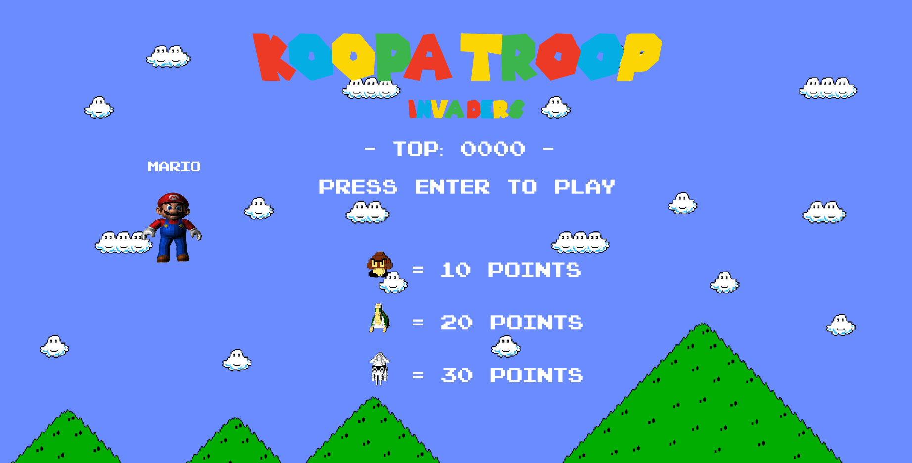
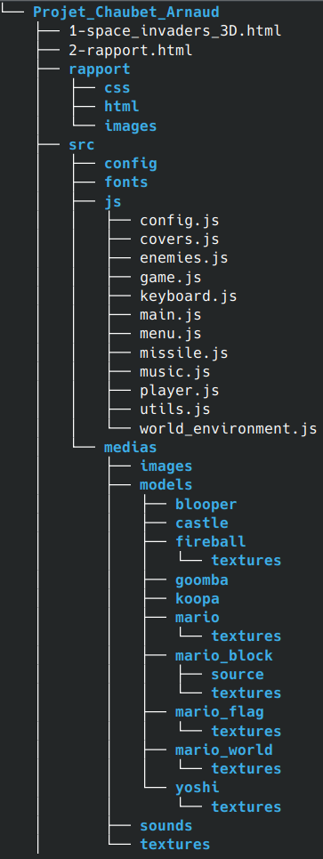
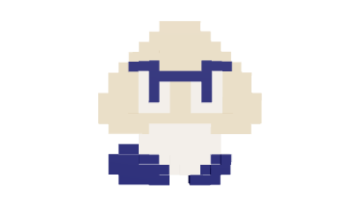
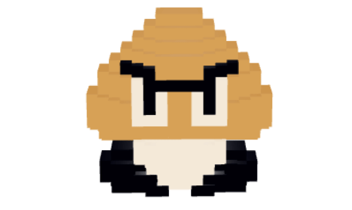
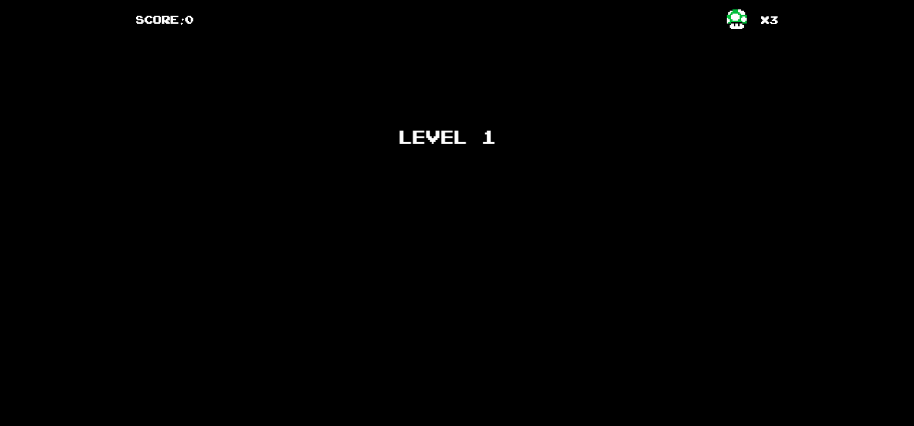
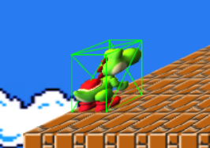
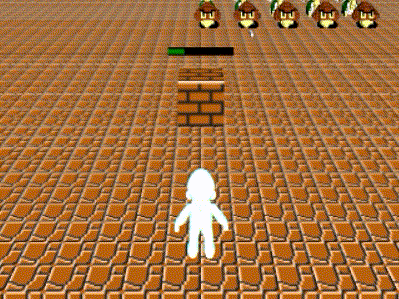

Rapport Projet SIA - Space Invaders 3D
Arnaud Chaubet - M1 TI
|
Le jeu consiste à tuer des aliens qui sont représentés par les ennemis du jeu "Super Mario Bros" Les ennemis se rapprochent horizontalement tout en se rappochant du joueur Ils peuvent également tirer des missiles qui font perdre des vies au joueur Pour éviter d'étre tué par les ennemis, le joueur est muni d'un missile permettant de les tuer Si le joueur touche un ennemi, alors il gagne des points Le joueur possède 3 vies, si il arrive à 0 alors la partie est terminée et affiche un écran Game Over avec le score Si le joueur passe les 3 niveaux alors la partie se termine sur un écran félicitant le joueur Le jeu est composé de 3 niveaux avec une difficulté qui augmente entre chaque niveaux |
|
Le jeu fonctionne grâce à la plateforme Node.js qui permet d'heberger localement une instance du jeu La bibliothèque Three.js est utilisée pour la construction en 3D du jeu Les effets post-processing sont gérés avec la bibliothèque three-stdlib (extension pour three.js) La musique du jeu est gérée à l'aide de la bibliothèque Howler Pour gérer les évenements liés au clavier, keyboard-ts à été utilisée |

Fig.1 - Ecran titre du jeu |
|
L'architecture logicielle du projet est la suivante:  |
|
Les décors sont repris du jeu "Mario Bros" Une texture est utilisé pour le sol et pour les abris, chaque niveau possède sa propre texture Les personnages et les ennemis sont en 3D et ont été trouvés sur le site sketchfab Un effet post-processing à été ajouté et permet de donner un effet ancienne TV au jeu, cet effet est activable via un appui sur la touche "e" Concernant l'animation des ennemis, elles ont été retravaillés à l'aide des logiciels MagicaVoxel et 3DS Max
|
|

Fig 2. Ancienne Animation |
|

Fig 3. Nouvelle Animation |
|
Lors d'un passage à un niveau supérieur, un message est affiché avec le prochain niveau La touche "h" permet d'afficher les touches utilisables |

Fig.4 - Ecran affichant le niveau |
|
Trois points de vue caméra sont disponibles Le premier (celui par défaut et accessible via la touche '0') montre un point de vue de la scène Le deuxème, accessible via la touche '1' donne un point de vue mobile qui suit le joueur Et le troisième, accessible via la touche '2' donne un point de vue latéral de la scène |
|
La collision est assuré par la mise en place d'un raycaster entre le joueur, les missiles, les ennemis et les abris Lorsqu'un alien est touché, celui-ci disparait de la scène Les abris (blocs) possèdent 3 vies Le joueur possède trois vies; lorsqu'il est touché par un missile ennemi, celui-ci perd une vie Pour améliorer la précision de la collision, le joueur est entouré d'une hitbox permettant de rendre possible l'utilisation de plusieurs personnages |
 |
Fig.5 - Hitbox au niveau du joueur
|
La vitesse de déplacement des ennemis augmente à chaque niveau La fréquence de tir des missiles ennemis augmente également à chaque niveau |
|
Une Intelligence artificielle est implémenté permettant de controller les tir des missiles ennemis Elle genère un nombre aléatoire entre 0 et le nombre maximum d'aliens encore en vie Cela signifie que plus il y a d'aliens éliminés, plus le nombre maximum diminue pour l'IA |
|
Les musiques et sons proviennent du jeu "Super Mario Bros" sorti sur NES (à l'exception de la musique du mode invincible) Chaque niveau possède sa propre musique Concernant les sons, il y en a un lorsque : - Le joueur tire - Le missile joueur touche un ennemi - Le missile joueur touche un abri - Le missile ennemi touche le joueur - Le joueur meurt - Le joueur gagne la partie |
|
Plusieurs touches permettent d'activer un mode de triche: - La touche 'i' permet d'activer le mode invincible, les ennemis ne bougent plus et le joueur ne perds pas de vie - La touche 'k' permet de tuer instantanément tous les aliens, le joueur ne gagne pas de points |
|
Le meilleur score est sauvegardé à l'aide d'un cookie Le joueur peut changer de personnages à l'aide de la touche 'p' Le dernier personnage séléctionné est également sauvegardé dans un cookie Lorsque le joueur appuie sur la touche 'Echap' le jeu se mets en pause Lorsque le mode invincible est activé, l'effet "Etoile" est appliqué au personnage et la musique "Wing Cap" du jeu "Super Mario 64" est jouée La configuration des personnages, des ennemis et des niveaux sont enregistrés dans un fichier JSON (fichier config.json), cela permet: - D'ajouter de nouveaux personnages au jeu - De rajouter des ennemis - De rajouter des niveaux avec personnalisation des textures, de la musique et de la difficulté |
|  |